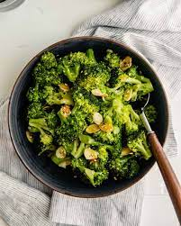

Sauteed Broccoli

Description
Broccoli is a healthy side dish for your family. Preparing it is cheap and easy as well as tasty.
There are very few ingredients needed, so there is no excuse not to have a freshly prepared vegetable dish.
Ingredients
- Broccoli florets
- Olive Oil
- Garlic
- Salt and Pepper
Steps
- Chop broccoli florets into pieces
- Crush and dice garlic
- Toss broccoli in olive oil and garlic
- Heat pan to medium heat
- Add broccoli to pan and cook for 5 minutes, stirring every 30 seconds
- Sprinkle with salt and pepper